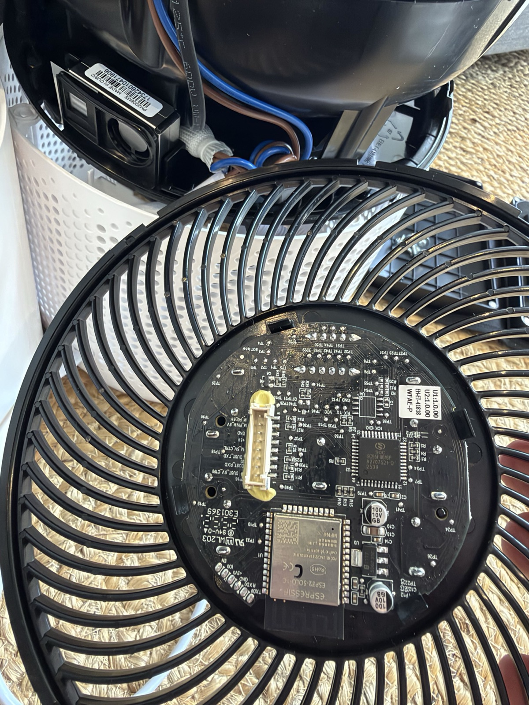
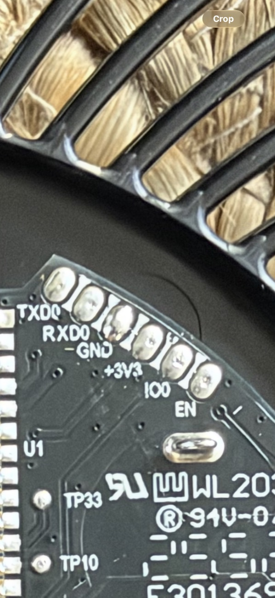
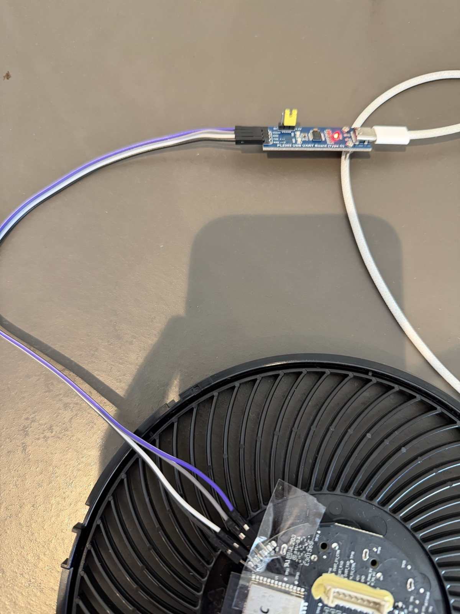
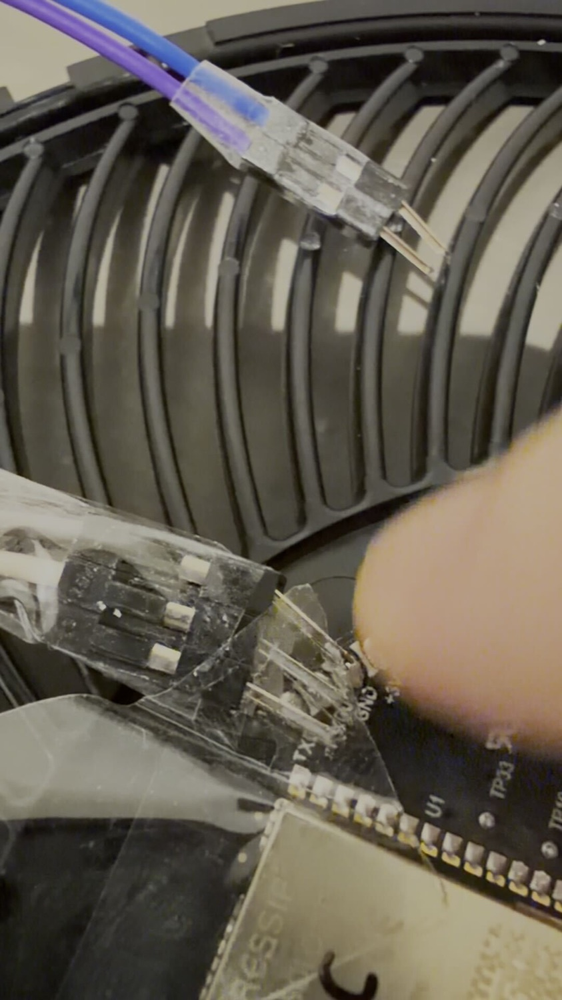

Two chips, one serial cable between them
Inside are two chips, not one, on the same board, splitting the work.
Runs the actual appliance: the fan motor, the physical buttons, the display, the particle sensor. It has no idea the internet exists. Reports its firmware as version 1.0.0. We never touch it.
An Espressif ESP32-SOLO-1C. Its entire job is the network side: talk to the cloud, relay app commands to the MCU. It's a general-purpose, reflashable microcontroller. This is the one we replace.

The two chips talk over that plain UART serial line at 115200 baud, the same kind of connection you'd use to read debug output from any dev board. Nothing is encrypted between them, because the manufacturer never expected anyone to be listening on a four-inch wire inside a sealed case.
Reverse engineering the dialect
Normally, mapping an unknown wire like this means an expensive logic analyser clipped onto the pins to record the traffic. Luckily, most of the Levoit protocol was already open source — earlier work by tuct/levoit and mulcmu had captured and documented it. So I only had to do the firmware-based part: fill in the bits specific to my purifier's controller.
The method: with the frames logging over Wi-Fi, do one thing and watch which byte moves:
the raw bytes: A5 12 10 17 00 41 01 33 40 00 00 00 01 01 00 01 00 64 01 01 00 01 01 00 01 00 00 00 00
Because the panel pushes a frame on every change, Home always matches the physical buttons.
The 300S is the simple case — fixed byte offsets you index into. Writing settings, and the other models, are harder (next section). One new thing from this unit: it runs MCU 1.0.0, an undocumented controller, so this 19-byte layout (an extra byte at offset 6) was unknown. We logged it and sent it to tuct/levoit.
One envelope, two completely different payloads
Every Levoit uses the same outer envelope, but underneath, the models split into two payload formats with almost nothing in common. Most of this was worked out across the open-source tuct/levoit project by disassembling the factory firmware; our contribution was the Core 300S MCU 1.0.0 piece.
The envelope everyone shares
Eleven header bytes, then payload. The checksum and counter rules are the same on every model.
| Byte | Field | Rule |
|---|---|---|
0 | Start | Always 0xA5 |
1 | Type | 22 send · 12 ack · 52 ack (600S/Sprout) |
2 | Counter | Starts 0x10, increments per packet; the MCU echoes it back in its ack |
3 | Length | Bytes after the checksum |
5 | Checksum | 0xFF − (sum of every other byte & 0xFF) |
6–8 | Command | Three bytes. Their first byte picks the protocol family |
The first command byte picks the family:
cmd[0]=01200S, 300S, 400S, 600S. Payload is fixed fields at fixed byte offsets — the 19-byte status from section 1. Easy to read once you have the map. This is the 300S.
cmd[0]=02Payload is a flat stream of TLVs (tag, length, value). Self-describing, so you have to recover what each tag means and the rules between them. The harder case.
Reading the TLVs has traps
A Vital status push is 32 TLVs back to back, and they aren't in tag order — the MCU emits
0x20 before 0x1F, every time. So you parse in wire order, using each
TLV's own length byte, or you desync. That length byte also caught a bug in the community spec:
three fields it lists as one byte are actually 16-bit (quick-clean, white-noise and sleep
minutes).
The write commands aren't on the wire
Reading state is easy — you watch the MCU send it. Writing is the problem: to set a feature the app sends a command, and for an obscure setting you may never capture one. The only complete source is the factory firmware, so we disassembled the stock ESP32 image (Xtensa, from the 4 MB flash backup) to read how it builds frames.
Every command is built by one serializer function (recovered at 0x4200b568). It packs
each field as a tag · length · value triplet:
A second function, a dispatcher, tags each command with a 16-bit key
(key = (cmd[2]<<8) | cmd[1]). Read that key at every call site and the whole command
set falls out:
| Key | Wire CMD | Feature |
|---|---|---|
0x5502 | 02 02 55 | Fan mode + auto-mode preferences |
0x5503 | 02 03 55 | Fan speed |
0x5504 | 02 04 55 | Display |
0x5511 | 02 11 55 | Light detect |
0x5140 | 02 40 51 | Child lock |
Behaviour, not just bytes
One write sets twelve settings at once, and a single byte in it (the "sleep type") gates the other eleven:
And two more traps from the same work: the "presets" share one field set (switching profiles
doesn't restore old values), and a write's tags don't match the status tags you read — they're
offset by 0x14, so the obvious guess produces a frame that's acked and ignored.
The frame envelope takes an afternoon. The behaviour — gates, shared storage, offset tags, a spec that's subtly wrong — is weeks.
Pressing a button used to be a round trip to a data centre
On the factory firmware, turning the fan up in the app did not talk to the purifier. It talked to a server, which talked to the purifier. Here is the whole chain for one tap.
I pulled the strings straight out of the stock firmware image. The device opens an authenticated
TLS connection to a VeSync MQTT broker (Connected to mqtts://%s:%d) and subscribes
to a per-device topic. Commands arrive as JSON over that channel. Nothing works without a VeSync
account and a live internet connection.
What it was sending back up
The traffic going the other way: the firmware has a whole telemetry pipeline. These are real function and field names lifted from the binary:
uploadAirPurifierData
Periodic report: fan speed, total used time, total "clean air" volume, and a timestamped PM2.5 air-quality series.
historydata partition
A dedicated flash region storing rows of ts · pm25_val · mode · fan_speed — a
local air-quality log, batched and uploaded.
deviceLogReport
Device-side diagnostic logs shipped to the cloud. There's no API to read your own logs back, only to send them.
setRegion · deviceRegion AE
The unit is pinned to a region (UAE). The firmware literally names itself
VS_WFON_APR_LAP-C302S-WGC_AE.
You bought a fan. To use it from your phone, you had to hand a company a continuous record of your home's air, tied to an account, on a server you can't see.
Why local-only
The replacement firmware has no cloud, no MQTT broker, no account, no telemetry partition. It speaks Matter directly to Apple Home over your own Wi-Fi and stops there. The air-quality numbers never leave the house. The binary contains no secrets and one build runs on every unit of a model. Nothing phones home because there's no home to phone.
What else the backup turned up
I kept a full copy of the original firmware before replacing it. Reading it statically, it does a lot more than relay fan commands:
An air-quality black box
A dedicated 256 KiB flash partition stores timestamped rows of PM2.5, mode, fan speed and cumulative runtime, then batches them to the cloud. A rolling record of the air in your room.
Two locks on the door
Commands aren't just TLS-encrypted, they're encrypted again underneath with AES and signed, and the device pins the vendor's own certificate. This is why impersonating the cloud was hopeless — it was never the weak point.
A dormant debug server
Flip one provisioning flag and the firmware opens a local network port that pipes straight into its own full command set — firmware updates included — with no cloud, password or certificate. Off by default; on this unit it never opened.
It can reflash its own appliance chip
The Wi-Fi chip can push new firmware to the MCU over that same internal serial line — a whole download protocol aimed at the controller that runs the motor.
A hidden factory test mode
A full production-line self-test is still in the shipping firmware, and it calls out to a separate server in another country — baked in even on this UAE unit.
Leftovers in the certificates
The embedded certificates carry internal developer email addresses, and the Wi-Fi password turns up in cleartext on the debug log path.
Static analysis of our own device's firmware backup. The debug-server and update paths were traced but never used to flash this unit — that's what the next section is about.
The two-day fight to flash it without opening the case
Replacing the firmware eventually meant opening the purifier and soldering five wires to flash the ESP32 over serial. Once. But I didn't want to open it, so I spent a while trying to get custom firmware on over the air instead. Every door turned out to be locked.
All of this was on my own device, on my own network.
The core problem: to flash over the air, I had to get the purifier to download my image. The factory had two plausible delivery paths, and I tried both.
Hijack the real cloud OTA
Let VeSync's own cloud issue the firmware-update command over its trusted channel, then redirect the plaintext HTTP download to my server. Problem: VeSync has no ESP32 firmware update on file for this UAE model at all. There was nothing to hijack.
Closed — no update exists to interceptImpersonate the cloud broker (MITM)
I control provisioning, so I pointed the device at my own MQTT broker and tried to be the cloud. The device dialled my server, spoke TLS, and then rejected my certificate. The firmware pins VeSync's private certificate authority. It ships the CA certs but not the private key, so I can't mint a certificate it trusts. Even the vendor's own spare key is a leaf that expired in 2019.
Closed — certificate pinning + mutual TLSTrick the cloud into pointing the device at my laptop
A partial breakthrough. The cloud's firewall blocks raw private IPs, but it accepts a
hostname. Using the dash-form 192-168-86-182.nip.io (a real name that resolves
to my LAN) I got the cloud to relay a firmware command, and the purifier made a real
HTTP GET to my laptop. It was fetching my file. The
full write-up of
this step is here.
…and it bailed after ~132 KB, every time
The download started but the device slammed the socket shut at a hard ceiling, far short of the ~960 KB image. I varied every field it could possibly check — model string, hardware rev, version, region, even the genuine vendor image — and it refused identically in about 60 ms. The update routine rejects the transfer for an internal reason the device only writes to its serial log. The one channel I was trying to avoid.
Closed — needs the serial log to see whyThe irony
The OTA image itself is unsigned — MD5 checksum only, Secure Boot off. If any download had ever completed, my firmware would have flashed and run. The security that stopped me wasn't protecting the image. It was the certificate pinning and the missing cloud record, both accidents of this being an obscure regional SKU the vendor never shipped an update for. The lock on the door was real; there was nothing behind it.
With every software route dead, I opened the case and flashed the ESP32 over serial. The board
exposes exactly the five pads you need —
TXD0, RXD0, GND, +3V3 and IO0 —
so it's a USB-to-serial adapter, five wires, and a flash command.

IO0 at power-on to drop into the bootloader.
Except it wasn't ten minutes. My soldering iron chose that day to die.

So I made the software tolerate it
A hand-held contact can't hold steady long enough to stream a 4 MB backup in one go. So before touching the board I wrote the backup-and-flash tooling to chunk the transfer and retry around dropped connections, picking up where it left off. That flaky-connection handling is the only reason a wobbling hand ever completed a full dump.
Reversible in the end: the original firmware is backed up, and the same pads flash it right back. The over-the-air attempt is written up in tuct/levoit#76.
Writing fully spec-compliant Matter firmware from scratch
Matter is the industry smart-home standard (Apple, Google, Amazon, Samsung behind it). A Matter device talks directly to controllers on your own network — no vendor cloud in the middle. Pair it once and your phone or hub commands it over the LAN, even with the internet unplugged.
I didn't bridge the purifier to Matter through some adapter. I wrote a native Matter application in C++ on Espressif's Matter SDK, running on the same ESP32 that used to run the VeSync stack. It implements the real spec: standard device types, the mandatory clusters, BLE commissioning and over-the-air updates, built the way the spec intends so any Matter controller understands the device, not just Apple Home.
The data model, done to spec
A Matter device describes itself as endpoints and clusters — a shared vocabulary every controller already speaks. The purifier presents as a proper device tree:
| Endpoint | Device type | Clusters |
|---|---|---|
1 | Air Purifier | Fan Control, On/Off, HEPA Filter Monitoring |
2 | Air Quality Sensor | Air Quality, PM2.5 Concentration |
3–5 | On/Off Plug-in Unit ×3 | Sleep, Display, Child Lock |
The spec-correct choice and the one that looks easy often differ:
- On/Off on the purifier. Without it, controllers turn the fan on by writing fan-mode "high", which then fights with setting Auto. Adding the standard On/Off cluster is the clean, spec-intended way, and it removed a whole class of timing hacks.
- Child lock is also
LocalConfigDisabledin Basic Information — the spec's own slot for "disable the device's physical controls." So a Matter-literate controller sees it in the standard place, not just as a custom switch. - Sleep is also the fan's "sleep wind" mode, which the spec defines as slowing to a final minimum. That's Matter's real home for it, so other controllers can show it natively.
Behind the endpoints, the firmware does the same translation the factory ESP32 did, minus the cloud: a Matter write becomes one of those reverse-engineered UART commands, the MCU acts and reports, and the new state is published back. Two tasks, one queue each way, the purifier always the source of truth.
BLE commissioning
Pairing is the full Matter-over-Bluetooth handshake. The setup code lives on a label, never in a cloud:
Over-the-air updates, both ends
I implemented Matter's OTA spec on both ends. The device is an OTA Requestor: the build wraps the app image in a Matter OTA header (vendor ID, product ID, version, SHA-256). Because Apple won't deliver updates for an uncertified device, I also wrote the other half — the OTA Provider, a small command-line tool. The two do the standard dance:
The safety net: a freshly flashed image only becomes permanent if, within two minutes of boot, the network is up and the MCU is answering. Otherwise the ESP32's bootloader quietly reverts to the previous image. You can push an update from the couch and the worst case is it rolls back.
Honest limitation
The one thing I can't do is certify it. A production Matter attestation certificate needs a paid vendor ID from the alliance, so the firmware uses the SDK's test certificate, and Apple Home says "uncertified accessory" once during pairing. The protocol is fully compliant; it's the paperwork that isn't.
And for the Home Assistant crowd
Where this really pays off is Home Assistant, the open-source home hub. It runs its own Matter controller and speaks ESPHome natively, so the purifier slots straight in with dashboards, automations and history kept on your own box. And because the device is standard Matter, it isn't limited to HA — Google Home, Alexa or SmartThings can drive it the same local way, no vendor cloud in the loop.
As a Matter device
Home Assistant runs its own Matter controller. Point it at the purifier and it joins as a third controller alongside Apple Home — same local protocol, no cloud, full fan and air-quality control.
As an ESPHome device
The sister firmware runs ESPHome, which Home Assistant speaks natively. Every sensor and control becomes a first-class HA entity, with dashboards, automations and history — all computed and stored on your own box.
The stock firmware has no local control at all — even Levoit's own app only ever talks to the cloud, so the day your internet drops, the app can't turn the fan on and only the physical buttons work. Home Assistant's stock VeSync add-on takes the same detour. My firmware removes it:
None of this was done alone, and none of it stays private
Everything here stands on community reverse engineering — people who tore these purifiers apart and wrote down what they found. I worked the same way: my oddball UAE unit (MCU 1.0.0) was documented nowhere, so every new thing I decoded went straight back upstream. The next person who opens one of these starts where I finished, not from a blank page.
Every finding went back as a pull request — the protocol work merged into the purifier's open-source driver (tuct/levoit), the Matter work in review upstream (esphome-matter), and the over-the-air delivery route to levoit-core300s-ota-wifi-flash.
18 pull requests · ● 10 merged · ● 8 open / in review
And the firmware itself is two open repositories, MIT-licensed, one build per model, no secrets baked in — fork it, flash it, or just read how it works.
levoit-matter
The native Matter firmware, with the OTA tooling and the full protocol write-up.
esphome-levoit-matter
The same purifier as an ESPHome config, for the Home Assistant route.
This is one device. The plan is the whole house.
The purifier was the first one. Same playbook now points at the air conditioner, the fridge, the washing machine — each one freed from its vendor cloud and brought onto the same local network, so the house runs its own automations with nothing phoning home.
Come home to the perfect house
Only possible once it's all local and on one hub. If I've been away more than two days and I'm heading home (six hours out, or landed at the airport):
- start the aircon and the air purifier
- run the vacuum and open the blinds
- take the fridge out of away mode
- put the TV on with a picture up, and play some music
Or, reading my own calendar: deep-clean the place before my flight home. No cloud account could orchestrate across brands like that — but devices that answer only to your own network can.
What I'd stress
Open source is the whole reason this works
Shared captures and shared protocols are what let anyone pick this up. Take from the commons, give back to it.
Why a whole relay backend?
The device is right there on your Wi-Fi, but there's no local control — every command detours through the vendor's servers and locks you into their app. No technical reason for it. Just talk to the device directly.
None of it was private, and none of it stays locked to a vendor. The reverse engineering goes back upstream, the firmware is open, and the house gets a little more mine with every device I bring onto the LAN.